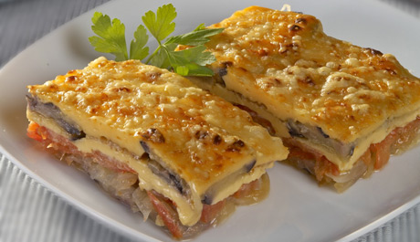

13 tartas rápidas y fáciles que te sacan de un apuro
 Webedia Directo al Paladar Menú Nuevo Buscar Pinterest Facebook Flipboard Instagram Youtube POSTRES MENÚ SEMANAL SELECCIÓN
Partners
Triunfa Con Buitoni Cocina con Maggi Destaca con Pascual13 tartas rápidas y fáciles que te sacan de un apuro
Sin comentarios HOY SE HABLA DE Menú Patatas Frutos secos Mascarillas España Andalucía Ofrecido por PascualTarta banoffee: plátano y toffee para un clásico de la repostería
Ofrecido por MaggiPor qué mucha gente tiene la tortilla de patata y calabacín como su receta favorita de este clásico
Ofrecido por BuitoniEmpanadas criollas: la edad dorada de una elaboración de origen humilde
Compartir 13 tartas rápidas y fáciles que te sacan de un apuro
Facebook Twitter Flipboard Email Síguenos Twitter Facebook Youtube Instagram Pinterest Flipboard 16 diciembre 2019, 16:51 Carmen Tía Alia @tiaalia ¡Gracias! 73 votosCuántas veces nos hemos visto en la necesidad de tener que poner una tarta sobre la mesa y no disponer de tiempo, recursos o ganas para hacerlo. A mi, personalmente, se me acaban los dedos al contar las veces que esto me ha pasado. Por eso agradezco muchísimo y guardo como oro en paño recetas que me sacan del apuro como estas 13 tartas rápidas y fáciles .
Porque, por mucho que me guste cocinar, no siempre le puedo dedicar el tiempo que quisiera. Suelo empezar por la comida principal y los platos salados, dejando la elaboración de postres y dulces para el final. Entonces me pilla el toro. Si os suena el asunto y estáis asintiendo internamente, vais a agradecer tener a mano atentos a las 13 tartas rápidas y fáciles que os explicamos a continuación.
Un vistazo a… TRES RECETAS para hacer TARTAS FÁCILES Y RÁPIDAS
En Flipboard: Postres, tartas y bizcochos
Recetas de postres, tartas y bizcochos deliciosos: trucos, ingredientes, las mejores presentaciones y todas las recetas de repostería casera, fácil y rápida de Directo al Paladar.
Seguir esta revista en FlipboardEntre todas nuestras propuestas hemos procurado incluir tartas al gusto de todos: de fruta, de chocolate, de queso o de otros tipos. Todas ellas requieren de menos de 30 minutos de preparación, aunque en la mayoría se necesita un tiempo posterior de enfriado, congelado, atemperado, etc. Pero estos tiempos no implican trabajo por nuestra parte, nos permiten despreocuparnos de ellas y son fáciles hasta decir "basta". Vamos a verlas.
1. Tarta de galletas María
Ingredientes
Para 1 unidades Galletas tipo María paquetes 2 Mantequilla sin sal a temperatura ambiente 200 g Azúcar glasé 200 g Yemas de huevo a temperatura ambiente 2 Leche 250 ml Esencia de vainilla media cucharadita Vaina de vainilla 1 Azúcar vainillado cucharada 1Cómo hacer Tarta de galletas María
Dificultad: Fácil Tiempo total 20 m Elaboración 20 m Reposo 1 hCalentar la leche a fuego suave con media vaina de vainilla abierta. Dejar infusionar, colar y dejar enfriar. Disponer la mantequilla troceada, a temperatura ambiente, en un recipiente mediano. Batir con varillas hasta cremar. Añadir poco a poco el azúcar glasé, sin dejar de batir, removiendo de vez en cuando con una lengua para conseguir una textura uniforme. Agregar las yemas y la esencia de vainilla y batir un poco más a velocidad baja hasta tener una consistencia cremosa, homogénea y sin grumos. Mojar una galleta María en la leche enfriada, escurrir y disponer en el centro de una fuente. Repetir con seis galletas más para distribuirlas a su alrededor, formando una base de flor de galletas. No tienen que estar muy empapadas. Untar ligeramente cada galleta con la crema, repartiéndola uniformemente. Repetir la operación hasta tener cinco pisos de galletas y crema. Cubrir la superficie y los laterales, alisando con ayuda de una espátula de repostería. Triturar unas cuantas galletas María y repartir por la parte superior. Dejar enfriar en la nevera una hora.
¡Gracias! 73 votosEnlace | Tarta de galletas María
2. Tarta de manzana en 15 minutos
Ingredientes: 2 o 3 manzanas, 3 huevos L, 50 g de mantequilla, 250 ml de leche semidesnatada, 5 cucharadas soperas rasas de fécula de maíz, 150 g de azúcar, 1 sobre de levadura química, caramelo líquido para bañar el molde, 3 cucharadas de mermelada de albaricoque o manzana para barnizar la tarta.
Elaboración: Añadimos caramelo líquido en la base del molde y los laterales. Pelamos las manzanas y las cortamos en lonchas finas. Derretimos unos segundos a media potencia la mantequilla en un bol para que esté líquida y templamos la mermelada otros segundos. Reservamos mientras que batimos la masa. En un vaso alto echamos, la fécula de maíz o Maicena, los huevos, la leche, el azúcar, el sobre de levadura y la mantequilla derretida. Batimos hasta mezclar. Vertemos en el molde y colocamos las manzanas. Ponemos en el microondas y cocemos a 800 watios durante cinco minutos, dejamos reposar cinco minutos dentro del microondas, cocemos otros cuatro minutos a 800 watios. Pincharmos con un palillo para comprobar que salga limpio si no, ponermos un minuto o dos más dependiendo de vuestro microondas. Pintamos con cuidado con la mermelada y gratinar un minuto con el grill para dorarle la superficie. Dejamos enfriar en la nevera.
Enlace | Tarta de manzana en 15 minutos
3. Semifrío de frambuesa y queso crema
Ingredientes para cuatro personas: Para la mousse de queso crema: 200 g de queso crema, 50 g de leche, 5 g de gelatina, 20 g de nata, 180 g de nata para semimontar. Para la mousse de frambuesa: 250 g de frambuesas, 6 g de hojas de gelatina, 20 g de azúcar, 50 g de queso crema, 200 g de nata con 35%MG o para montar.
Elaboración: Para la mousse de queso crema, forraremos con film de cocina transparente, cuatro aros de emplatar metálicos. Si disponemos de tiras de acetato, la colocaremos por todo el perímetro interior del aro para que nos ayude a la hora de desmoldar. Para hacer la mousse de queso crema, ponemos a remojar las hojas de gelatina en agua fría durante un mínimo de quince minutos. Después mezclamos el queso crema en un bol, añadimos la leche y unimos todo bien con unas varillas. Reservamos. Calentamos los 20 gramos de nata en el microondas y les añadimos la gelatina bien escurrida. Mezclamos esto con el batido de queso y leche. En otro bol montamos ligeramente la nata y la mezclamos con suavidad a la mezcla anterior. Vertemos con una jarra en los aros que tengamos preparados, congelamos hasta que endurezca. Para la mousse de frambuesa, comenzamos hidratando las hojas de gelatina en agua muy fría durante 15 minutos. Mientras lavamos las frambuesas y las trituramos en el vaso de una batidora con el azúcar. De este puré de frambuesa retiramos la mitad de un vasito que calentaremos en el fuego o en el microondas. En esa parte de puré caliente disolvemos las hojas de gelatina muy escurridas y agregamos esa mezcla al resto de puré que estaba a temperatura ambiente, integrando todo bien. Le añadimos finalmente el queso crema removiendo con unas varillas. En otro bol semimontamos la nata bien fría con unas varillas, tenemos que batirla hasta que este densa y espumosa, pero no tan montada como cuando vamos a decorar algo con ella. La mezclamos suavemente con el puré y queso, removiendo con una espátula de silicona. Repartimos la mousse de frambuesa encima de la mousse de queso congelada que habíamos preparado anteriormente. Congelamos de nuevo un mínimo de cuatro horas. Una vez congelado, desmoldamos y dejamos durante dos o tres horas en la nevera para que descongele antes de servirlo.
Enlace | Semifrío de frambuesa y queso crema
4. Tartaletas de lima y queso crema
Ingredientes para cuatro personas: 100 g de galletas, 30 g de almendra laminada, 60 g de mantequilla, 4 limas, 100 g de queso crema y 180 g de leche condensada.
Elaboración: Fundimos la mantequilla en el microondas, a baja potencia y golpes cortos de calor, o en un cacito al fuego. Trituramos las galletas en un robot de cocina junto con las almendras, agregamos la mantequilla fundida y trituramos de nuevo hasta conseguir una masa homogénea. Podemos especiar la mezcla con un poco de canela, jengibre, nuez moscada, cardamomo, etc. Extendemos la masa sobre la base y laterales de cuatro moldes para tartaleta, con ayuda de los dedos y procurando que quede de igual grosor por toda la superficie. Introducimos los moldes en la nevera para que se enfríen y endurezcan. Con 30 minutos será suficiente, pero si tenemos prisa podemos usar el congelador y reducir el tiempo a la mitad. Mientras las bases se enfrían y toman cuerpo, preparamos el relleno de la tarta. Para ello, rallamos y exprimimos las cuatro limas. Reservamos la ralladura por un lado y el zumo por otro. En un cuenco amplio, con ayuda de unas varillas metálicas, mezclamos el queso crema y la ralladura de lima. Trabajamos la mezcla durante un minuto para que se atempere y, a continuación, incorporamos la leche condensada. Seguimos batiendo con las varillas hasta obtener una mezcla homogénea. Por último, agregamos el zumo de lima y mezclamos bien. En este momento, la mezcla comenzará a espesar por efecto del zumo de lima así que, sin perder tiempo, sacamos los moldes de tartaleta de la nevera y los rellenamos con la mezcla. Alisamos la superficie para que quede bien bonita e introducimos las tartaletas de nuevo en la nevera. Dejamos que tome cuerpo durante, al menos, seis horas o, mejor aún, toda la noche.
Enlace | Tartaletas de lima y queso crema
5. Tarta de manzana fina y crujiente
Ingredientes para cuatro personas: 1 lámina de hojaldre, 4 manzanas, 200 g de compota de manzana, 20 g de mantequilla, azúcar, gelatina de manzana o mermelada de albaricoque. Elaboración: Calentamos el horno a 190º calor arriba abajo sin aire. Sobre una bandeja de horno sin borde, tipo a la de las galletas, colocamos papel de horno, sobre éste la lámina de hojaldre. La pincelamos con la mantequilla derretida tibia y espolvoreamos con un poco de azúcar. Colocamos encima otra bandeja y giramos, damos la vuelta al hojaldre, de modo que ahora la parte pincelada y azucarada haga de base. En la parte superior colocamos la compota de manzana, llegando casi hasta el borde, y sobre ella rodajas de manzana muy finas, de forma ordenada y bonita. Pincelamos con mantequilla, espolvoreamos con azúcar. Ponemos sobre la tarta una rejilla, otra bandeja o peso plano, para evitar que el hojaldre suba y horneamos durante unos 35 minutos, más o menos, hasta que veamos que está ligeramente dorado. Un poco antes de terminar el tiempo de horneado retiramos la bandeja superior y dejamos que la tarta se dore. Sacamos del horno y barnizamos con gelatina de manzana o mermelada de albaricoque.Enlace | Tarta de manzana fina y crujiente
6. Tarta fina de mango
Ingredientes para seis personas: 6 hojas de pasta brick, 2 mangos medianos, 30 g de mantequilla fundida, 2 cucharaditas de azúcar glas, 1 cucharada de sirope de arce o miel de caña. Para la crema de almendra: 60 g de mantequilla a temperatura ambiente, 60 g de azúcar, 60 g de almendra en polvo, 20 g de almendra tostada granillo, 1 cucharada sopera de maicena, 1 huevo M.
Elaboración: Comenzaremos precalentando el horno a 200 grados con calor arriba y abajo. Con un cuchillo bien afilado o una mandolina cortamos el mango en finas rodajas. Reservamos. Para hacer la base, ponemos en una bandeja de horno una lámina de pasta brick, la pintamos con mantequilla derretida y la espolvoreamos con azúcar las. Repetimos esta operación con el resto de las láminas. Para hacer la crema, batimos con unas varillas la mantequilla a temperatura ambiente con el azúcar. Le incorporamos la almendra en polvo, la Maicena, el huevo y el granillo de almendra, reservando un poco para espolvorear a la hora de servir. Esparcimos por la masa brick la masa de almendra hasta un centímetro del borde y colocamos en forma de flor el mango. Horneamos durante 25 minutos aproximadamente y cuando la retiremos del horno le pintamos la fruta con el sirope de arce, espolvoreando el granillo de almendra por encima.
Enlace | Tarta fina de mango
7. Tarta fácil de hojaldre con fresas y almendra
Ingredientes para un molde de 20 centímetros de diámetro: 2 planchas de hojaldre refrigerado, 400 g de fresas, 80 g de azúcar moreno, 100 g de almendra molida, 20 g de mantequilla, 1 cucharada de harina.
Elaboración: Comenzaremos lavando las fresas y cortándolas a la mitad. Engrasamos un molde de tarta y lo enharinamos con la cucharada de harina. Extendemos encima de la base del molde una de las planchas de hojaldre refrigerado. Precalentamos el horno con calor arriba y abajo a 210 grados. Mezclamos la almendra molida con la mitad del azúcar moreno y extendemos esta mezcla encima del hojaldre repartiéndola por igual. Echamos las fresas. Cortamos la otra plancha de hojaldre en tiras de un centímetro de grosor y las disponemos encima de las fresas creando un enrejado. Espolvoreamos el resto del azúcar moreno por encima del hojaldre y horneamos durante 30 minutos. Retiramos del horno y dejamos enfriar a temperatura ambiente.
Enlace | Tarta fácil de hojaldre con fresas y almendra
8. Tarta de chocolate blanco
Ingredientes para cuatro personas: Para el bizcocho genovés: 4 huevos M, 100 g de azúcar, 120 g de harina de repostería, 1 pellizco de sal. Para la mousse de chocolate blanco: 7 g de hojas de gelatina, 100 g de leche entera, 190 g de cobertura de chocolate blanco de buena calidad para repostería y 250 g de nata con 35% MG.
Elaboración: Comenzaremos preparando el bizcocho genovés que nos servirá de base. Para eso precalentamos el horno a 180 grados y forramos con papel de horno una bandeja de pastelería. Batimos en un bol los huevos a temperatura ambiente con el azúcar hasta que blanqueen y doblen su volumen. Añadimos cuidadosamente la harina tamizada y la sal, mezclamos con espátula con movimientos envolventes hasta integrar la harina y que no se vean grumos. Extendemos con una espátula la mezcla hasta dejarla de una altura un poco inferior a un centímetro repartiendo la masa en un rectángulo de unos 30 por 40 centímetros. Horneamos ocho minutos. Una vez cocido lo dejamos enfriar y los separamos del papel con cuidado. Cortamos un disco de 16 centímetros de diámetro que servirá de base de la tarta. Para la mousse, ponemos en abundante agua fría las hojas de gelatina a hidratar durante 10 minutos. Una vez pase el tiempo, calentamos la leche hasta justo antes de hervir y agregamos las hojas de gelatina escurridas. Removemos para que se disuelvan. Por otra parte en un bol de cristal derretimos la cobertura de chocolate blanco a intervalos cortos y removiendo para que no se queme. Esto también lo podéis hacer al baño maría. Una vez derretida, vertemos sobre el chocolate, removiendo con una espátula de silicona en tres veces, la leche caliente con la gelatina. Conseguimos una ganache cremosa, lisa y brillante. Reservamos. En un bol o batidora de varillas batimos la nata hasta que monte, pero no haga picos, tiene que quedar espumosa. Mezclamos con la ganache de chocolate blanco cuando esta esté templada o si tenemos termómetro de cocina esté a una temperatura de entre 35-40 grados. Vertemos en un molde de 18 centímetros de silicona y le colocamos, una vez echada la mousse, el disco de bizcocho incrustándolo en la crema. Congelamos unas horas para que gelifique y sea fácil de desmoldar. Una vez congelada, desmoldamos, giramos la tarta para que quede el bizcocho de base, y dejamos descongelar durante tres o cuatro horas en la nevera hasta la hora de servir.
Enlace | La mejor tarta de chocolate blanco que probarás jamás
9. La tarta de chocolate más fácil del mundo
Ingredientes para ocho personas: 10-12 obleas, 350 g de crema de cacao y avellanas, cereales de chocolate, nueces y azúcar glas.
Elaboración: Calentamos la crema de cacao y avellanas para que resulte más fácil trabajar con ella, para ello introducimos el bote (sin tapa ni restos de papel metalizado) en el microondas y programamos un minuto a potencia baja. Removemos con un cuchillo o cuchara para homogeneizar al tiempo que comprobamos el punto. Si la notamos demasiado dura, le damos otro golpe de calor. Colocamos una oblea sobre una trabla y la cubrimos con un par de cucharadas de crema de cacao y avellanas. La extendemos por toda la superficie con ayuda de una brocha y con mucho cuidado de no romperla. Colocamos otra oblea encima, bien alineada, y repetimos la operación. Hacemos esto cuantas veces sea necesario, terminando con una oblea sin cubrir. Es posible que las obleas no sean rectas del todo, como podéis ver en la foto del paso a paso, así que colocamos un peso sobre ellas para que queden unidas. Dejamos reposar en la nevera durante un mínimo de una hora. Transcurrido este tiempo, retiramos el peso, untamos la superficie con crema de cacao y avellanas y decoramos al gusto. Nosotros hemos usado cereales de chocolate, nueces troceadas y azúcar glas.
Enlace | La tarta de chocolate más fácil del mundo
En Directo al Paladar Las cinco tartas más buscadas de Internet y sus recetas más fáciles y deliciosas10. Tarta de chocolate blanco y galletas Oreo
Ingredientes para cuatro personas: Para la base: 115 g de galletas Oreo sin el relleno, 50 g de mantequilla. Para el relleno: 200 g de chocolate blanco de repostería, 100 ml de nata líquida al 35%MG, 125 g de queso mascarpone a temperatura ambiente, 6 g de hoja de gelatina, 250 g de frambuesas frescas.
Elaboración: Comenzaremos retirando el relleno de las galletas Oreo hasta juntar los 115 gramos de galletas. Echamos estas en un robot picador, o las trituramos finas con un rodillo de cocina dentro de una bolsa de congelación, le añadimos la mantequilla derretida y formamos una pasta con la que forraremos la base de un aro de pastelería de unos 16 centímetros de diámetro, puesto sobre una bandeja forrada con papel de horno. Refrigeramos. Para la mousse ponemos en un bol con abundante agua fría las hojas de gelatina a hidratar durante 10 minutos. En un bol echamos el chocolate picado y lo derretimos con cuidado al baño maría o en el microondas. Reservamos. Ponemos un cazo y calentamos la nata hasta que comience a hervir, retiramos del fuego y añadimos las hojas de gelatina escurridas, vertemos en tres veces, removiendo con una espátula de silicona, sobre el chocolate blanco fundido, hasta lograr una ganache lisa y brillante. Le añadimos suavemente el queso mascarpone a temperatura ambiente, y rellenamos el aro para formar la tarta. Dejamos refrigerar durante cinco horas antes de desmoldar. Decoramos con frambuesas frescas.
Enlace | Tarta de chocolate blanco y galletas Oreo
11. Tarta fácil de Nocilla
Ingredientes para un molde de 24-26 cm: 12 galletas (tipo digestive), 60 g de mantequilla a temperatura ambiente, 15 g de cacao en polvo sin azúcar, 4 huevos "M" y 300 g de nocilla.
Elaboración: Como hemos mencionado en la introducción, la incorporación de la base es totalmente opcional. La tarta fácil de nocilla se puede preparar sin ella y convertir esta receta en una mucho más fácil todavía. No obstante, como es la elaboración de la base de galletas es muy sencilla, nosotros hemos decidido incorporarla y darle así un poco de consistencia a esta tarta. Trituramos las galletas con un robot de cocina. Si no disponemos de el, podemos meterlas en una bolsa de plástico y machacar a mano con ayuda de un rodillo. Añadimos la mantequilla junto con el cacao el polvo y trituramos o mezclamos de nuevo hasta obtener una mezcla homogénea. Si el resultado fuese una pasta seca, lo arreglaremos añadiendo un poco más de mantequilla. Forramos la base del molde (mejor desmoldable) con papel sulfurizado y extendemos la pasta de galleta sobre toda la superficie. Calentamos la nocilla en el microondas, a potencia baja. Batimos los huevos hasta blanquear y les agregamos la nocilla poco a poco. La incorporamos con movimientos envolventes, con suavidad para que no pierdan los huevos el aire incorporado con el batido. Rellenamos el molde con la mezcla de huevo y nocilla y lo introducimos en la parte central del horno, pre-calentado a 180ºC. Cocemos durante 30 minutos antes de cubrir con papel de aluminio y terminar la cocción con 10 minutos más. Abrimos la puerta levemente y dejamos que la tarta se atempere en su interior durante 30 minutos antes de retirar, enfriar, desmoldar y servir.
Enlace | Tarta fácil de Nocilla
12. Tarta de queso sin horno
Ingredientes para un molde de 12 cm de diámetro: 50 g de galletas (básicas), 20 g de mantequilla, 135 g de queso crema, 100 g de leche, 12 g de cuajada en polvo (1 sobre) y 40 g de azúcar glas.
Elaboración. Comenzamos por la base de galleta y, para ello, machacamos las galletas y las mezclamos bien con la mantequilla, que habremos fundido previamente, hasta obtener una masa homogénea. Las galletas las podemos machacar manualmente en un mortero, en un molinillo eléctrico o dentro de una bolsa y aplastándola con un rodillo. Cubrimos la base de nuestro molde con la mezcla de la galleta y la mantequilla, asegurándonos de apretar bien para que quede condensada bien distribuida por la base. Dejamos enfriar mientras preparamos el relleno. Podemos introducirla en la nevera o en el congelador para que tome cuerpo y endurezca un poco. Mezclamos la cuajada en polvo con el azúcar glas y le añadimos 80 g de leche. Removemos hasta disolver. Calentamos los 20 g de leche restantes junto con el queso crema y cuando comience a hervir, incorporamos la mezcla anterior. Removemos al tiempo que toma temperatura y retiramos del fuego cuando alcance de nuevo el hervor. Rellenamos el molde con la mezcla y dejamos atemperar antes de introducir en la nevera donde esperaremos a que solidifique durante, al menos, un par de horas antes de desmoldar y decorar con fruta, mermelada o lo que más nos guste o tengamos a mano. Servimos fría de la nevera.
Enlace | Tarta de queso sin horno
Suscríbete para recibir cada día nuestras recetas, información sobre nutrición y actualidad sobre gastronomía.
13. Cheesecake de Nutella
Ingredientes para un molde de 18 cms o ocho personas: 125 g de galletas digestive, 35 g de mantequilla, 300 g de Nutella, 350 g de queso crema, 30 g de azúcar glas y 50 g de avellanas peladas.
Elaboración: La base de la tarta se elabora con 50 g de Nutella, por ello lo primero que debemos hacer es separar esta cantidad de los 300 g de Nutella totales. El resto lo reservamos para la crema. En un robot de cocina trituramos las galletas digestive, la mantequilla y los 50 g de Nutella. Obtendremos una masa homogénea con la que cubrir la base de nuestro molde (mejor desmoldable). A continuación, en un recipiente hondo mezclamos el queso crema con el resto de la Nutella y el azúcar glas. Si le damos calor, conseguiremos mezclar los ingredientes de manera más fácil. Esto lo podemos hacer colocando el recipiente sobre una cacerola con agua hirviendo y removiendo con unas varillas o utilizando un robot de cocina con posibilidad de aplicar calor, tipo thermomix. Rellenamos el molde desmoldable con esta mezcla, dejándola caer con suavidad. La extendemos por toda la superficie, ya sea moviendo ligeramente el molde o golpeándolo sobre la encimera. Lo introducimos en la nevera y dejamos que tome cuerpo, según se enfría, durante un mínimo de 5 horas (mejor si es durante toda la noche). Media hora antes de desmoldarlo, lo introducimos en el congelador. Esto nos ayudará a manipularlo, puse es un cheesecake delicado. Picamos las avellanas con un cuchillo o las machacamos en un mortero, las tostamos en una sartén a fuego medio-alto, removiendo de vez en cuando para que no se quemen. Desmoldamos el cheesecake y lo decoramos con las avellanas tostadas.
Enlace | Cheesecake de Nutella
En Directo al Paladar | 15 deliciosas tartas sin horno para disfrutar cocinando toda la familia
En Directo al Paladar | Trece tartas de queso con algo diferente que las hace inolvidables
Directo al Paladar en Instagram
Seguir
Compartir 13 tartas rápidas y fáciles que te sacan de un apuro
Facebook Twitter Flipboard E-mail Temas Recetario de cocina Directo al paladar Tartas Postres fáciles y rápidos Postres rápidos y fáciles Recetas en menos de 30 minutosCompartir
Facebook Twitter Flipboard E-mail 1Si te ha gustado, puedes recibir más en tu correo
Te enviamos nuestra newsletter una vez al día, con todo lo que publicamos
Comentarios cerrados Temas de interés Tarta tres cocholates Thermomix brownie bizcocho de yogur crema pastelera Roscón de Reyes ensalada césar pollo al horno lentejas tortilla de patatas croquetas torrijas fideuá InicioPartners
Triunfa Con Buitoni Cocina con Maggi Destaca con Pascual Recetas con Thermomix Recetas de Aperitivos Recetas de Ensaladas Recetas de Postres Recetas Vegetarianas Utensilios Postres fáciles y rápidos Recetas de invierno Horno Huevos Azúcar HarinaVer más temas
Síguenos Twitter Facebook Youtube Instagram Pinterest Flipboard Directo al Paladar TV Lo mejor Equipo editorial Contacta con nosotrosMás sitios que te gustarán
Espinof Xataka Poprosa VitónicaExplora en nuestros medios
Tecnología Móviles, tablets, aplicaciones, videojuegos, fotografía, domótica Xataka Xataka Móvil Xataka Foto Xataka Android Xataka Smart Home Xataka Windows Xataka Ciencia Applesfera Genbeta Magnet Mundo Xiaomi Videojuegos Consolas, juegos, PC, PS4, Switch, Nintendo 3DS y Xbox 3DJuegos Vida Extra IGN Millenium Entretenimiento Series, cine, estrenos en cartelera, premios, rodajes, nuevas películas, televisión Sensacine Espinof Gastronomía Recetas, recetas de cocina fácil, pinchos, tapas, postres Directo al Paladar Estilo de vida Moda, belleza, estilo, salud, fitness, familia, gastronomía, decoración, famosos Vitónica Trendencias Trendencias Hombre Decoesfera Compradiccion Poprosa Latinoamérica Publicaciones de México Xataka México Directo al Paladar México Sensacine México 3DJuegos México Aviso legal Condiciones de uso Condiciones de uso de cookies Publicidad InicioReciente
Redondo frío de pollo, receta perfecta para un picnic Nuestros favoritos Suspiros de Pajares, receta tradicional asturiana para nostálgicos de las galletas de mantequilla de toda la vida Ocho recetas de fritura de pescado para un picoteo del finde marinero Gastroguía de Sevilla: qué comer en la capital de Andalucía (y qué restaurantes no debes perderte en la ciudad hispalense) Cómo hacer mantequilla a las finas hierbas Nuestros favoritos Gratén o gratinado de patatas con cebolla caramelizada y queso, la receta que los más queseros adorarán Las sartenes mejor valoradas de Amazon en oferta con las que adelantarte al Prime Day Ensalada fusilli con mozzarella y atún, receta de pasta de verano Nuestros favoritos Cómo hacer los mejores boquerones fritos en casa Recetas variadas para disfrutar del verano en el menú semanal del 21 de junio Francia retira 7.000 productos por presencia de óxido de etileno: qué es esta sustancia cancerígena prohibida y cómo llega a los alimentos Narezushi: el antecedente directo del sushi es un pescado fermentado no apto para melindrosos Las mejores freidoras de aire caliente para cocinar sin aceite y llevar una alimentación equilibrada desde 60 euros en Amazon Recetas frescas de verano perfectas para la cena en el paseo por la gastronomía de la red Cómo hacer mantequilla clarificada o manteca de vaca cocida: receta ideal para la repostería tradicional Del gazpacho de Belén Esteban a las patatas fritas de Nil Ojeda y Paula Gonu: las nuevas marcas personales de comida en España Ajo caliente, campero o de viña: la humilde receta tradicional andaluza que nos tiene cautivados Por qué los gallegos nunca beben agua cuando comen pulpo Tapas: 57 ideas fáciles para comer de picoteo Nuestros favoritos Probamos la Aifryer XL de Philips, una freidora sin aceite extragrande (y con WiFi)Ver más artículos
Directo al Paladar TV
Receta de empanadas criollas caseras, fáciles y rápidas SANGRÍA como DIOS MANDA Cómo sacar TODO EL PARTIDO a una FREIDORA SIN ACEITEVer más vídeos
Síguenos Twitter Facebook Youtube Instagram Pinterest FlipboardEn Directo al Paladar hablamos de
Recetas con Thermomix Recetas de Aperitivos Recetas de Ensaladas Recetas de Postres Recetas Vegetarianas Utensilios Postres fáciles y rápidos Recetas de invierno Horno Huevos Azúcar HarinaVer más temas
SubirWebedia
Tecnología
Xataka Xataka Móvil Xataka Foto Xataka Android Xataka Smart Home Xataka Windows Xataka Ciencia Applesfera Genbeta Magnet Mundo XiaomiVideojuegos
3DJuegos Vida Extra IGN MilleniumEntretenimiento
Sensacine EspinofGastronomía
Directo al PaladarEstilo de vida
Vitónica Trendencias Trendencias Hombre Decoesfera Compradiccion PoprosaLatinoamérica
Xataka México 3DJuegos México Sensacine México Directo al Paladar México Webedia Xataka Vida Extra Espinof Genbeta Directo al Paladar Xataka Ciencia Trendencias Applesfera Xataka Móvil Decoesfera Vitónica Xataka Foto Trendencias Hombre Xataka Android Xataka Smart Home Xataka Windows Magnet Compradiccion 3DJuegos Sensacine IGN Millenium Poprosa Mundo XiaomiTecnología
Xataka Xataka Móvil Xataka Foto Xataka Android Xataka Smart Home Xataka Windows Xataka Ciencia Applesfera Genbeta Magnet Mundo XiaomiVideojuegos
3DJuegos Vida Extra IGN MilleniumEntretenimiento
Sensacine EspinofGastronomía
Directo al PaladarEstilo de vida
Vitónica Trendencias Trendencias Hombre Decoesfera Compradiccion Poprosa